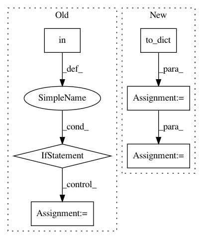

bb8cf918f0a6b0f63db15c2fd34f5d314ff51b02,finetune/input_pipeline.py,BasePipeline,get_target_input_fn,#BasePipeline#Any#Any#,316
Before Change
"attention_weights": TS([12,512,512])
}
if self.config.base_model in [GPTModel, GPTModelSmall]:
output_types = {"features":tf.float32, "sequence_features":tf.float32, "attention_weights":tf.float32}
else:
output_types = (tf.float32, tf.float32)
tf_dataset = lambda: tf.data.Dataset.from_generator(dataset_encoded,output_types=output_types).batch(batch_size)
//tf_dataset = lambda: tf.data.Dataset.from_tensor_slices(features).batch(batch_size)
return tf_dataset
After Change
def get_target_input_fn(self, features, batch_size=None):
batch_size = min(len(features),64)
features = pd.DataFrame(features).to_dict("list")
for key in features:
features[key] = np.array(features[key])
tf_dataset = lambda: tf.data.Dataset.from_tensor_slices(dict(features)).batch(batch_size)
return tf_dataset
@property
In pattern: SUPERPATTERN
Frequency: 3
Non-data size: 6
Instances
Project Name: IndicoDataSolutions/finetune
Commit Name: bb8cf918f0a6b0f63db15c2fd34f5d314ff51b02
Time: 2019-06-20
Author: matthew.bayer@indico.io
File Name: finetune/input_pipeline.py
Class Name: BasePipeline
Method Name: get_target_input_fn
Project Name: IndicoDataSolutions/finetune
Commit Name: 3052e961e54ead28c717b6bbf5c785946e727fa9
Time: 2019-06-20
Author: matthew.bayer@indico.io
File Name: finetune/input_pipeline.py
Class Name: BasePipeline
Method Name: get_target_input_fn
Project Name: polyaxon/polyaxon
Commit Name: 57a90c815b43fdfa6031597bbafa9fbcbfc00fe6
Time: 2017-12-13
Author: mouradmourafiq@gmail.com
File Name: polyaxon_cli/cli/cluster.py
Class Name:
Method Name: get_cluster_info